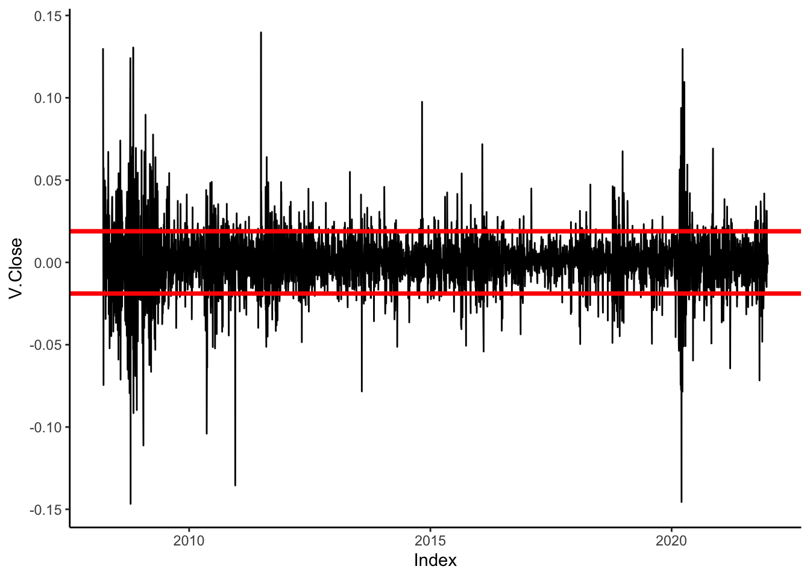
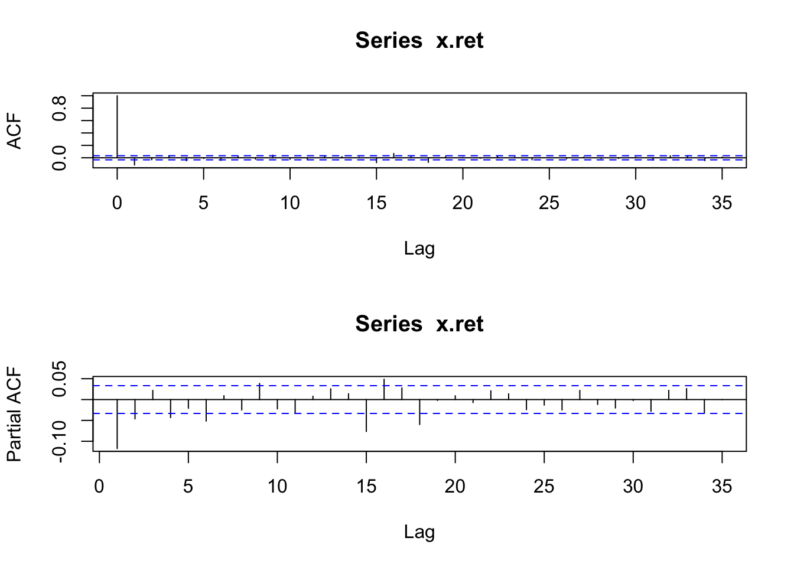

Uno de los objetivos de un Gerente de Riesgo Cuantitativo (QRM) es medir y monitorear el riesgo de un portafolio. Para esta tarea se utiliza la volatilidad de los rendimientos del portafolio como medida de riesgo.
En este análisis se exploran diferentes medidas de volatilidad utilizando los retornos de las acciones de la compañía Visa para el período comprendido entre 2008 y 2021.
Medidas de Volatilidad
No condicional vs condicional
Exponentially weighted moving average (EWMA)
GARCH
Visa
Para este caso estaremos utilizando la serie de precios de Visa desde el 2008 hasta el 2021. Más abajo se muestra la evolución de los retornos diarios de este instrumento.
Se observa una alta volatilidad incondicional. Para todo el período de análisis, este indicador asciende a 0.019. Este tipo de analisis considera cada realización de igual manera, por lo que movimientos de precios que ocurrieron al principio de la serie tienen igual ponderación que aquellos movimientos que sucedieron en el pasado reciente.
Code
x.ret |>ggplot() +geom_line(aes(x = Index, y = V.Close)) +geom_hline(yintercept =sd(x.ret$V.Close), col ='red', linewidth =1.3) +geom_hline(yintercept =-sd(x.ret$V.Close), col ='red', linewidth =1.3) +theme_classic()

EWMA
Una alternativa más robusta es el uso de una medida de volatilidad que descuenta la ponderación en el tiempo.
En general, para datos diarios \(\lambda = 0.94\). A continuación se observa un gráfico donde se puede apreciar que la medida de volatilidad es mayor en aquellos periodos donde las variaciones de precios tienden a mostrar variaciones de mayor escala, y que la misma disminuye en periodos de mayor estabilidad de precios.
Los modelos GARCH permiten capturar determinados rezagos de la varianza de la serie en cuestión, añadiendo mayor flexibilidad a la hora de modelar el comportamiento de la volatilidad. Propiamente, estos modelos se especifican como:
Para la estimación de estos modelos es necesario espeficicar un modelo ARIMA.
Code
par(mfrow=c(2,1))acf(x.ret)pacf(x.ret)

Los resultado de las pruebas de autocorrelación y autocorrelacion parcial sugieren el uso de un modelo ARMA(1,1). Más abajo se muestra el resultado de un modelo GARCH(1,1).
Al comparar los resultado de las volatilidades de los modelos EWMA y GARCH(1,1) se puede apreciar que los resultados son similares (para el caso específico de esta serie). Se sugiere explorar otras versiones de la familia de modelos GARCH que logren capturar de mejor manera la volatilidad de esta serie.
Una forma de buscar un mejor modelo GARCH es estimar diferentes versiones con distintos parámetros y luego escoger el mejor modelo basado en criterios de informacion (como el AIC).
Code
# Importa funcionessource('https://raw.githubusercontent.com/msperlin/GARCH-RAC/master/fcts/garch_fcts.R')tab_out <-do_arch_test(x = x.ret, max_lag =5)dist_to_use <-c('norm','std','jsu') # see rugarch::ugarchspecsmodels_to_estimate <-c('sGARCH', 'eGARCH', 'gjrGARCH') # see rugarch::rugarchspec help for moreout <-find_best_arch_model(x = x.ret, type_models = models_to_estimate,dist_to_use = dist_to_use,max_lag_AR =1,max_lag_MA =1,max_lag_ARCH =1,max_lag_GARCH =1)# tabla resumen con resultadostab_out <- out$tab_outbest_models <-c(tab_out$model_name[which.min(tab_out$AIC)], tab_out$model_name[which.min(tab_out$BIC)])tab_out |>filter(!is.na(AIC)) |> DT::datatable()
Code
#print(tab_out)
La tabla anterior muestra diferentes resultados de una batería de modelos. De este ejercicio se identifica que los modelos con menor criterio de informacion AIC y BIC son ARMA(1,1)+eGARCH(1,1) jsu, ARMA(1,1)+eGARCH(1,1) jsu. Utilizando esta especificación y los datos observados de las variaciones logarítmicas de precios obtenemos una mejor visión acerca de los riesgos de este instrumento.
Con el “mejor” modelo que describe el comportamiento de la volatilidad de los retornos es posible construir una simulación de Monte Carlo para generar t días en el futuro n cantidad de veces. Utilizando esto, es posible analizar la distribución de estas proyecciones.
Code
days.ahead =365n.sim <-1000garch.sim <-matrix(nrow = days.ahead, ncol=n.sim)set.seed(123)for(i in1:n.sim){ p.sim =ugarchsim(my_best_garch, n.sim=days.ahead, startMethod="sample") garch.sim[,i] <- p.sim@simulation$seriesSim}garch.sim <-as.data.frame(garch.sim)# Determinar los percentiles correspondientesgarch.sim$Q01 <-NAgarch.sim$Q05 <-NAgarch.sim$Q25 <-NAgarch.sim$Q75 <-NAgarch.sim$Q95 <-NAgarch.sim$Q99 <-NAgarch.sim$Q01 <-apply(garch.sim[,2:(ncol(garch.sim)-6)], FUN =function(x){quantile(na.omit(x),0.01)}, MARGIN =1)garch.sim$Q05 <-apply(garch.sim[,2:(ncol(garch.sim)-6)], FUN =function(x){quantile(na.omit(x),0.05)}, MARGIN =1)garch.sim$Q25 <-apply(garch.sim[,2:(ncol(garch.sim)-6)], FUN =function(x){quantile(na.omit(x),0.25)}, MARGIN =1)garch.sim$Q75 <-apply(garch.sim[,2:(ncol(garch.sim)-6)], FUN =function(x){quantile(na.omit(x),0.75)}, MARGIN =1)garch.sim$Q95 <-apply(garch.sim[,2:(ncol(garch.sim)-6)], FUN =function(x){quantile(na.omit(x),0.95)}, MARGIN =1)garch.sim$Q99 <-apply(garch.sim[,2:(ncol(garch.sim)-6)], FUN =function(x){quantile(na.omit(x),0.99)}, MARGIN =1)# PRICE LEVEL FORECAST ----# Mapeo de predicciones de volatilidad por vía de la simulación en el precio# sim.dates <- seq(lubridate::ymd(last(index(x.ret))+1), # last(index(x.ret)) + (days.ahead), # by = "days")sim.dates <-seq(last(index(x.ret)) - (days.ahead), last(index(x.ret)) -1, by ="days")df <-cbind(as.data.frame(sim.dates), garch.sim)df <-as.xts(df[,-1], order.by=df$sim.dates)df <-as.numeric(tail(Cl(x.ret),1)) *cumprod(1+ df)df.combined <-rbind(Cl(x.ret))#,Cl(H1.oos))df.combined <-merge(df.combined,df[,1:(ncol(df)-1)]) # do not merge the empty columnlast.day <-index(tail(Cl(x.ret),1))df.combined$Q01 <-as.numeric(apply(df.combined[,2:(ncol(df.combined)-1)], FUN =function(x){quantile(na.omit(x),0.01)}, MARGIN =1))df.combined$Q05 <-as.numeric(apply(df.combined[,2:(ncol(df.combined)-2)], FUN =function(x){quantile(na.omit(x),0.05)}, MARGIN =1))df.combined$Q25 <-as.numeric(apply(df.combined[,2:(ncol(df.combined)-3)], FUN =function(x){quantile(na.omit(x),0.25)}, MARGIN =1))df.combined$Q75 <-as.numeric(apply(df.combined[,2:(ncol(df.combined)-4)], FUN =function(x){quantile(na.omit(x),0.75)}, MARGIN =1))df.combined$Q95 <-as.numeric(apply(df.combined[,2:(ncol(df.combined)-5)], FUN =function(x){quantile(na.omit(x),0.95)}, MARGIN =1))df.combined$Q99 <-as.numeric(apply(df.combined[,2:(ncol(df.combined)-6)], FUN =function(x){quantile(na.omit(x),0.99)}, MARGIN =1))df.combined$mean <-as.numeric(apply(df.combined[,2:(ncol(df.combined)-7)], FUN =function(x){mean(na.omit(x))}, MARGIN =1))#tail(df.combined[,c('Q01','Q05','Q25','mean','Q75','Q95','Q99')],15)#Visualizacionpar(mfrow=c(1,1))garch.sim.plot <-plot(Cl(df.combined["2018::"]), ylim=c(min(na.omit(df.combined["2019::",1]))*0.6,max(na.omit(df.combined["2019::",1]))*1.3), main=paste0("Simulated ", out$best_bic$type_model, "(", out$best_bic$lag_arch, "," ,out$best_bic$lag_garch, ") + ARMA(",out$best_bic$lag_ar, "," ,out$best_bic$lag_ma,") + ", out$best_bic$type_dist, " distribution"), grid.col=NA)garch.sim.plot <-lines(df.combined[,2:(ncol(df.combined)-6)], col=alpha("grey",0.5), on=1, lty=2, lwd=0.75)garch.sim.plot <-lines(df.combined[,'Q01'], col="red", on=1, lty=1, lwd=1)garch.sim.plot <-lines(df.combined[,'Q05'], col="red", on=1, lty=2, lwd=1.5)garch.sim.plot <-lines(df.combined[,'Q25'], col="red", on=1, lty=3, lwd=1.5)garch.sim.plot <-lines(df.combined[,'mean'], col="black", on=1, lty=2, lwd=1.5)garch.sim.plot <-lines(df.combined[,'Q75'], col="blue", on=1, lty=3, lwd=1.5)garch.sim.plot <-lines(df.combined[,'Q95'], col="blue", on=1, lty=2, lwd=1.5)garch.sim.plot <-lines(df.combined[,'Q99'], col="blue", on=1, lty=1, lwd=1)garch.sim.plot <-lines(Cl(df.combined["2021::"]), col="black", on=1, lwd=1.25)garch.sim.plot <-points(tail(df.combined[,'mean'],1), col="red", pch=16)garch.sim.plot